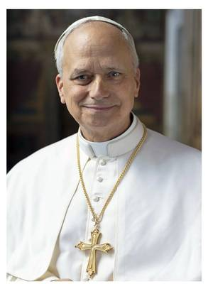
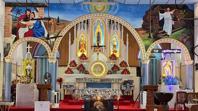
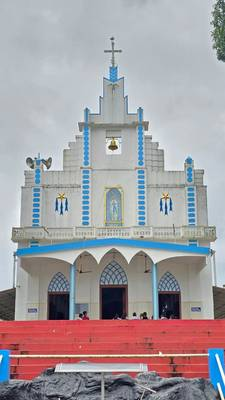
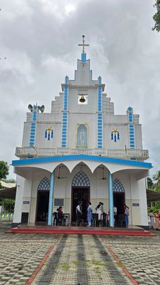

Guided in Faith, Serving in Love
This is the central hub where the behind-the-scenes life of our parish is cared for. Our administrative team works diligently to keep worship, events, communication and the upkeep of our church running smoothly. If you have questions, need support, or wish to get involved, please reach out — your participation is integral to the growth of our church family.
"And he gave some as apostles, and some as prophets, and some as evangelists, and some as pastors and teachers." — Ephesians 4:11
Our Hierarchy
The shepherds who guide our universal, major-archiepiscopal and diocesan Church

Pope Leo XIV
Supreme Pontiff of the Universal Church
Mar Raphael Thattil
Major Archbishop of the Syro-Malabar Church
Mar George Madathikandathil
Bishop of Kothamangalam

V. Rev. Fr Alex Thannikunnel
Lourde Matha Church, Thalayanadu
Parish Administration
Those who serve our parish day by day
V. Rev. Fr Alex Thannikunnel
Lourde Matha Church, Thalayanadu

Assistant Parish Priest
Assists the vicar in pastoral care and liturgy
Parish Office
Certificates, registers and parish records

Sacristan
Care of the church and sacristy

Parish Trustees
Elected trustees of the parish
Names and contact details of office bearers will be updated here — please contact the parish office for the current list.
Former Bishops
Shepherds who guided our eparchy and the Syro-Malabar Church
Mar George Punnakkottil
Bishop of Kothamangalam (1977–2013)
Late Mar Varkey Vithayathil
Major Archbishop of the Syro-Malabar Church
Late Mar Mathew Pothanamuzhy
First Bishop of Kothamangalam (1956–1977)
Former Vicars
Priests who shepherded our parish in years past
ഇടവകയിലെ സേവനമനുഷ്ഠിച്ച വികാരിമാർ

റവ. ഫാ. യാക്കോബ് ബലപ്പാത്തിൽ
1930-1939

റവ. ഫാ. ലൂക്കാ കാപ്പൂക്കൽ
01.02.1939 - 13.10.1940

റവ. ഫാ. കുര്യാക്കോസ് വട്ടക്കുഴുപ്പുത്ത്
20.10.1940 - 14.09.1942

റവ. ഫാ. സെബാസ്റ്റ്യൻ കിഴക്കേതിൽ
14.09.1942 - 04.03.1951

റവ. ഫാ. ലൂക്കോസ് ജോർജ് പുറം
08.03.1951 - 07.04.1956

റവ. ഫാ. ജോസഫ് നെടുങ്കപ്പള്ളിൽ
09.04.1956 - 31.05.1966

റവ. ഫാ. ജോസഫ് തിരുവഞ്ചിൽ
16.06.1966 - 19.12.1969

റവ. ഫാ. ജോസഫ് ഓലിക്കൂറം
19.12.1969 - 16.01.1978

റവ. ഫാ. ആന്റണി പൂതൃക്കയിൽ
21.04.1972 - 08.04.1979

റവ. ഫാ. സെബാസ്റ്റ്യൻ ചുങ്കത്ത്
19.01.1978 - 17.04.1981

റവ. ഫാ. ജോസഫ് പാലിയക്കരക്കൽ VC
29.03.1979 - 12.12.1979

റവ. ഫാ. ജോസഫ് പൂതൃക്കയിൽ
07.04.1979 - 29.03.1978

റവ. ഫാ. ജോമു ഒറ്റക്കൽ
12.12.1979 - 17.04.1982

റവ. ഫാ. തോമസ് കാട്ടുകാരിൽ
17.04.1981 - 21.03.1983

റവ. ഫാ. തോമസ് നടുവിൽ
07.04.1982 - 16.04.1986

റവ. ഫാ. അബ്രാഹം ചെങ്ങന്നൂർക്കര
21.03.1983 - 02.04.1986

റവ. ഫാ. ആന്റണി തുരുത്തേൽ
16.04.1986 - 15.09.1998

റവ. ഫാ. ജോസഫ് കുരീക്കുഴിയിൽ
21.04.1986 - 20.04.1972

റവ. ഫാ. ജോസഫ് വടക്കേൽ
13.05.1988 - 19.05.1999

റവ. ഫാ. പീറ്റർ ചിറക്കര
14.09.1988 - 13.09.1989
റവ. ഫാ. തോമസ് ചെറുവാഴയിൽ
14.05.1991 - 20.03.1993

റവ. ഫാ. ജോയ്സ് തമ്പി
20.05.1993 - 16.05.1998

റവ. ഫാ. ജോൺ കുറ്റിയാ
16.05.1998 - 19.09.2001

റവ. ഫാ. ജോസഫ് മുളന്താനത്ത്
19.06.1999 - 14.03.1991
റവ. ഫാ. ജോസഫ് പണക്കൽ
19.09.2001 - 13.06.2004
റവ. ഫാ. ജോർജ് (ജിജോ) നെടിയകാട്
10.06.2004 - 24.09.2009
റവ. ഫാ. നിക്കോളാസ് മുളന്താനത്ത്
04.06.2009 - 19.05.2012
റവ. ഫാ. ആന്റണി വൂക്കുഴി
24.09.2009 - 04.06.2010
റവ. ഫാ. ജോൺസ് കാട്ടുകാരിൽ
19.06.2012 - 20.05.2017
റവ. ഫാ. ജോർജ് ഇടത്തോട്ടിൽ
20.05.2017 - 10.07.2021
റവ. ഫാ. ഫ്രാൻസിസ് നെടുങ്ങാട്ടിൽ
10.07.2021 - 21.05.2022
റവ. ഫാ. ആന്റണി തുരുത്തേൽ
21.05.2022 - 17.05.2026
Names and dates as inscribed on the parish vicars' board.
Phone
Address
Kolapra – Thalayanadu Road,
Thalayanadu, Idukki, Kerala 685585
Visit
6:00 AM – 8:00 PM
Mon – Sun